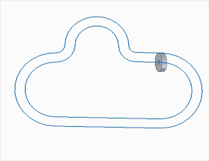

Variable Table Motor command

You can use the Variable Table Motor command (Home tab→Motors group→Variable Table Motor) to simulate motion in an assembly by incrementing the variable associated with an
angular or linear assembly relationship by a specified amount over a period of time.
This allows for more complex motions than can be achieved using the Linear Motor command or the Rotational Motor command (for more information, see the Rotational and Linear Motor commands).
The Variable Table Motor can be used to:
-
Animate patterns
-
Animate variable table formulas and equations
-
Aid in animating adjustable assemblies
For example, the follower in a path relationship can be moved along the path by incrementing
a fixed Path relationship variable value in the Variable Table (Tools tab→Variables group→Variables) at a specified speed. The following animation depicts how a follower is moved along
a edge chain path using a Variable Table Motor.

You can use this capability to define a wide variety of movements. Valid variables can be any driving distance or angular Variable Table parameter. Driven variables are not supported.
The Variable Table Motor works with existing motors (Linear and Rotational) in the motor simulation timeline. To accomplish this, linear and rotation motors update from the current position to the next position (processed incrementally). Direction vectors and axis are defined and updated using the current position of the component.
The Variable Table Motor dialog box allows you to:
-
Identify the driving variable in the Variable Table
-
Define speed
-
Optionally limit movement
-
Control direction
If a relationship that is used to define the motion is deleted or becomes driven, the motor is shown in an error state in the Motors collector in the PathFinder. Invalid relationship variable values for a motor in an error state are not indicated in Variable Table. If the variable value is invalid in the Variable Table, the motor is shown in an error state in the Motor collector in the PathFinder.
A Family of Assemblies motor must be defined for all members. The simulation timeline only processes the active member. If the variable is excluded or suppressed from the active member, the motor performs no action.
In the simulation timeline, a Variable Table Motor behaves just like any other existing motor. It appears in the Motors collector using its PathFinder name.
Variable Table Motors have the following characteristics:
-
A Variable Table Motor definition can be reversed or mirrored in the simulation timeline.
-
If a Variable Table Motor attempts to set a variable value and it fails, no error is issued during simulation. The value just does not change.
-
More than one Variable Table Motor can be defined using the same variable in the Variable Table.
-
The simulation timeline does not allow motors of the same type on the same part to be invoked at the same time.
-
The Physical Motion and Detect Collisions options are not valid when defining a Variable Table Motor using the Motor Group Properties dialog box.
Right-click a Variable Table Motor in the Motors collector of the PathFinder to edit its definition, delete the motor, or change its name.
See the Variable Table Motor workflow for more information about the procedure used to define a Variable Table Motor and apply it to a simulation.
How do I
Create an animation using the Animation EditorDefine a Camera Path for an Assembly Animation
Create a motor
Simulate a Motor
Modify flow lines in an exploded assembly
Modify an animation
Delete an Animation
Add frames or time to an animation event
Remove frames or time from an animation event
Play back an animation
Save a movie
Display flow lines in an exploded assembly
Display flow line terminators in an exploded assembly
Use a Surface Dial with the Animation Editor
Learn more
Creating assembly animationsLook up more details
Animation Editor ToolCamera Path Wizard
Camera Path Wizard (Page 1)
Camera Path Wizard (Page 2)
Camera Path Wizard (Page 3)
Rotational Motor and Linear Motor commands
Animation Editor command
Camera Path Wizard command
Simulate Motor command
Delete Animation command
Add Frames Command
Remove Frames Command
Save As Movie command
Add Frames Dialog Box
Animation Properties dialog box
Appearance command bar
Delete Animation Dialog Box
Duration Properties dialog box
Rotational Motor command bar
Linear Motor command bar
Motor Group Properties dialog box
Path command bar (Animation Editor Tool)
Remove Frames Dialog Box
Save As Movie dialog box
Save As Movie Options dialog box